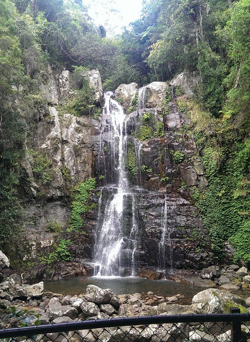

Photos
Cascading Waterfalls descend from the main waterfall

Spectacular fresh water waterfall
General Info
A medium grade walk almost entirely footpathed. Ascend up into the spectacular rainforest until reaching the waterfall at the end of the trail.
Getting There
You can turn into Minnamurra Falls Road of Jamberoo Mountain Road. The carpark and visitor centre is at the summation of the road.
Map


 24 Hour Access
24 Hour Access Scenic Site
Scenic Site Hike Grade: Regular
Hike Grade: Regular